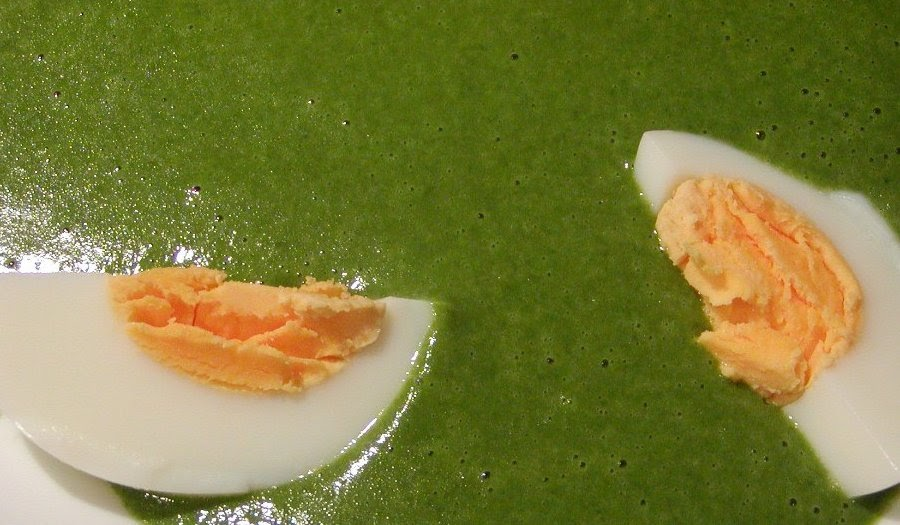
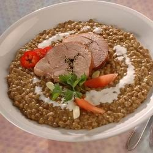
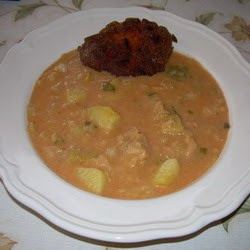

|  |
Főzelék |
A főzelék zöldségből készült főfogás, ami nem köret. Szinte bármiből készülhet, pl. bab, lencse, spenót, tök, zöldbab, burgonya, kelkáposzta stb.
A teljes értékű, egészséges táplálkozásban fontos a növényi és az állati eredetű nyersanyagok megfelelő aránya. Ezért a főzelékek nagyon fontos szerepet töltenek be a korszerű, egészséges étrend összeállításában, mivel előnyösen egészítik ki a húsból vagy tojásból készült ételeket. Gazdag az ásványianyag-tartalmuk: a vas, a mész, a jód, a nátrium szervezetünk napi szükségleteit fedezi. Igyekezzünk mindennap az idénynek megfelelően valamilyen főzeléket fogyasztani.
|  |  |
| Lencsefőzelék | Kelkáposztafőzelék |
A főzelékeket készíthetjük:
A főzelékek általában úgy készülnek, hogy sós lében megfőzik a zöldséget, a levet besűrítik, majd sóval és fűszerekkel (pl. babérlevél, pirospaprika, kapor) ízesítik. A sűrítés történhet habarással és rántással, illetve saját levének elfőzésével.
A főzeléket gyakran feltéttel (pl. pörkölttel, főtt vagy sült hússal, kolbászfélékkel, rántott zöldségfélékkel, rántott gombával vagy kemény tojással) tálalják, de a főétel nem a feltét, hanem a főzelék. Ilyen értelemben a főzeléket csak a magyarok készítik, mert más népek a főzeléknövényeket leginkább köretként (párolva, grillezve) vagy salátaként fogyasztják.
{kind=link}